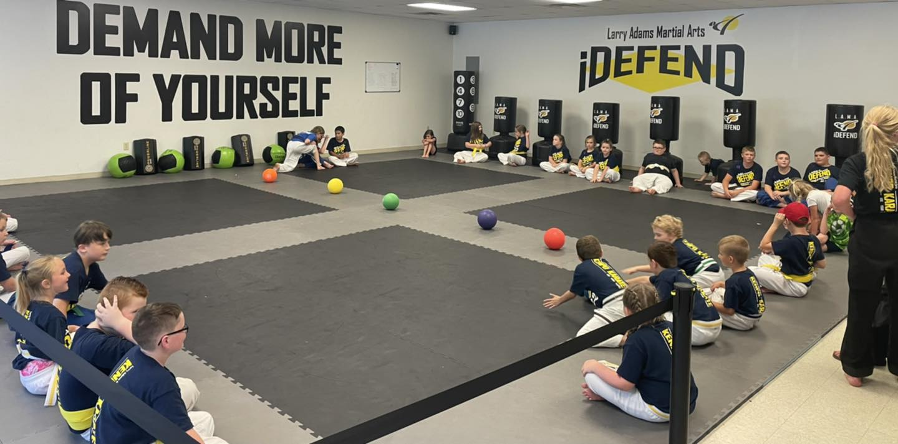

Jeffery Sumner
IT Support Technician | Cybersecurity Student | Aspiring Security Analyst
Focused on network defense, intrusion detection, Linux, and hands-on security lab work.
IT Support Technician | Cybersecurity Student | Aspiring Security Analyst
Focused on network defense, intrusion detection, Linux, and hands-on security lab work.
I am an IT Support Technician and Cybersecurity student building practical skills in network security, intrusion detection, and defensive operations. I am currently working toward CompTIA Security+ while gaining hands on experience through home labs, virtual environments, and security focused projects.
My background in IT support has helped me develop a strong foundation in troubleshooting, user support, networking, and systems administration. As I continue growing in cybersecurity, I am focused on building experience with tools and concepts related to SOC operations, security monitoring, alert analysis, packet inspection, and network defense.
I have worked with technologies including Kali Linux, Security Onion, Suricata, Wireshark, Linux based environments, and virtual lab systems. My long term goal is to move into a Security Operations or junior analyst role where I can contribute to monitoring, detection, and incident response.
Below are examples of hands-on work that reflect my technical interests and practical experience in cybersecurity, networking, and web projects.
I also build and maintain simple websites as part of my broader technical skill set.
Feel free to reach out if you would like to connect, discuss opportunities, or talk cybersecurity and IT.